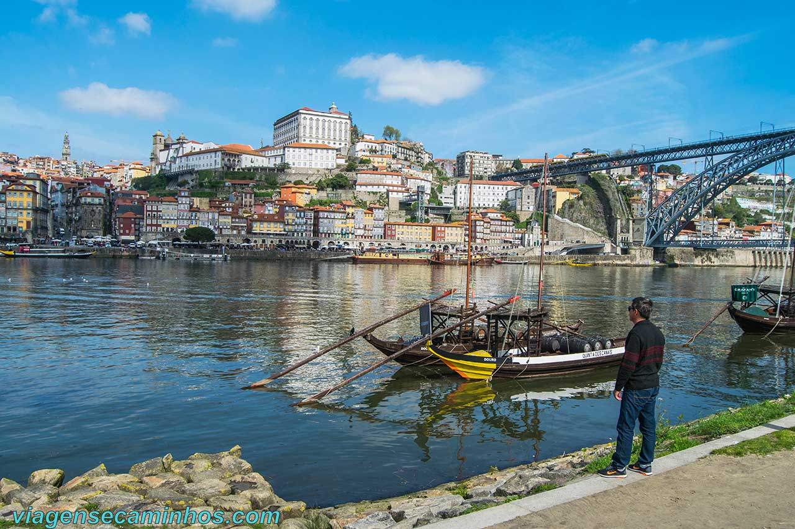

Visitado ✓Portugal 📍
Um dos lugares mais lindos que eu já fui. Eu tenho família no Porto, eles moram na cidade do Porto, quando eu fui para lá conheci eles. É muito difícil entendê-los — o sotaque é muito diferente — mas foi muito especial para mim. Me diverti muito na festa de São João do Porto. O povo de lá tem uma tradição de fazer um corredor polonês e bater na cabeça das pessoas com martelinhos de plástico. Também conheci Lisboa, que é a capital de Portugal. Não fiquei muito tempo lá, mas adorei como a cidade é movimentada e bonita.